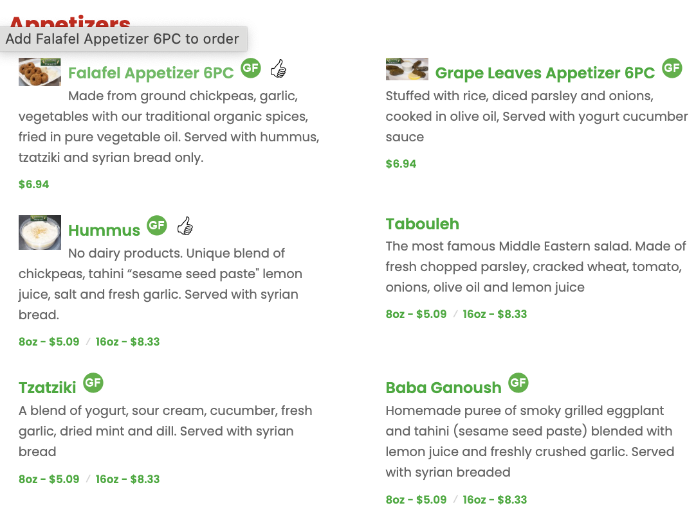

Designing With Principles
What makes an interface well-designed? Websites, video games, professional software, and physical interfaces are judged on a multitude of criteria, differing for each interface and each user. Evaluation is an inherently subjective process. Despite this, I believe three tenets of
accessibility,
reponsiveness,
and
adaptability,
are the closest thing we have to objective metrics. These are the things I keep in mind while designing my interfaces:
An accessible interface is built to accommodate a diverse set of users, improving everyone's experience.
A responsive interface provides useful visual feedback, so users feel confident navigating it.
An adaptive interface functions in many different contexts, so users can interact with it on their own terms.
An accessible interface is built to accommodate a diverse set of users, improving everyone's experience.
A responsive interface provides useful visual feedback, so users feel confident navigating it.
An adaptive interface functions in many different contexts, so users can interact with it on their own terms.

The Case Study: An Online Menu
I frequent a restaurant called East Side Pockets. The restaurant itself is charming, and their food is delicious. Their website, however, does not represent the quality of their product, so I redesigned it with my three tenets in mind. I will take you through my process.
The original website's Menu page.
Step 1: Identifying Issues
The first step in my process was identifying what needed to change. I started by understanding what the page was trying to do, and found where the implementation got in the way. Then, I critically examined how well the three tenets of accessibility, responsiveness, and adaptiveness were being followed. I boiled my findings down into three main problem areas that needed addressing.
Problem 1: Cluttered Chaos
The large logo banner persists between pages, obscuring the menu itself.
Each button on the banner is interactable with keyboard navigation, potentially causing confusion.
The gratuitous buttons on the top menu obfuscate the most important links: home, menu, and contact (menu and online ordering lead to the same place).
The placement of interactive elements is haphazard, contributing to a cluttered, overwhelming first impression of the page.
The large logo banner persists between pages, obscuring the menu itself.
Each button on the banner is interactable with keyboard navigation, potentially causing confusion.
The gratuitous buttons on the top menu obfuscate the most important links: home, menu, and contact (menu and online ordering lead to the same place).
The placement of interactive elements is haphazard, contributing to a cluttered, overwhelming first impression of the page.
Problem 2: Visual Inconsistency
Nearly every group of interactive elements on the page are unique, having their own colors, layouts, and responses to user input.
The top menu does not stick to the top of the page, forcing the user to scroll all the way to the top if they want to access it again.
On phone dimensions, the logo banner takes up the entire screen, even hiding the top menu.
Nearly every group of interactive elements on the page are unique, having their own colors, layouts, and responses to user input.
The top menu does not stick to the top of the page, forcing the user to scroll all the way to the top if they want to access it again.
On phone dimensions, the logo banner takes up the entire screen, even hiding the top menu.

Problem 3: Dull and Obscure Presentation
The menu items themselves are presented mostly as blocks of text with only minimal whitespace separating them.
Images next to menu items are tiny and pixelated, making them almost useless, if not detrimental. They are also inconsistent, being present on only a few menu items.
The icons next to the title lack explanation. I was confused about what the thumbs up icon was meant to represent; and any ambiguity about things like halal or gluten free options could be dangerous.
There is no obvious place to click to order the items. The item titles are interactable, which I found out by trial and error.
Alt text on images is present but not descriptive.
The menu items themselves are presented mostly as blocks of text with only minimal whitespace separating them.
Images next to menu items are tiny and pixelated, making them almost useless, if not detrimental. They are also inconsistent, being present on only a few menu items.
The icons next to the title lack explanation. I was confused about what the thumbs up icon was meant to represent; and any ambiguity about things like halal or gluten free options could be dangerous.
There is no obvious place to click to order the items. The item titles are interactable, which I found out by trial and error.
Alt text on images is present but not descriptive.
Observations
As I had suspected, the old website had many problems. Any such website’s purpose is to help users learn more about the restaurant and facilitate easy online ordering. The various confusing redundancies, visual inconsistencies, and poorly presented content made the menu harder to navigate and generally less appealing.
In terms of accessibility, there were multiple glaring issues for keyboard/screen-reader users and those with visual impairments, not to mention the general impediments to the learnability and efficiency of the interface. The website was generally but inconsistently responsive to user input. It was also minimally adaptive, with the banner covering the entire screen in smaller sizes.
In terms of accessibility, there were multiple glaring issues for keyboard/screen-reader users and those with visual impairments, not to mention the general impediments to the learnability and efficiency of the interface. The website was generally but inconsistently responsive to user input. It was also minimally adaptive, with the banner covering the entire screen in smaller sizes.
Step 2: Initial Mockups
Before I got started working on the actual website, I created mockups in Figma. This allowed me to easily iterate and test the design on multiple screen sizes, so I could ensure that my components were adaptive and accessible.
My Design
My final design is a streamlined overhaul of the original website's menu. Reduced visual clutter, a more organized and consistent structure, and a more refined presentation make it more functional while improving its accessibility, responsiveness, and adaptiveness.
You can visit the site at: https://nathan-sr.github.io/cs1300/EastSidePockets/
I streamlined the entire page to improve its functioning, accessibility, and responsiveness. I removed the intrusive logo banner. I pared down the cluttered top menu, and reduced the number of buttons throughout the page. I unified the responsive elements so they are all highlighted the same color on hover. All of these changes make the interface more effective and usable.
I refreshed the content of the menu. I provided a key for icons in addition to making them more distinctive. I made the images the centerpiece of each item to help online shoppers assess their orders. I provided a clearly interactive button for adding items to the cart. I added more space in between elements for a cleaner, easier-to-follow look.
I made the page more adaptive to different screen sizes. Gone is the massive logo banner. On smaller screen sizes, images shrink to take up less space, and menu items automatically organize into smaller rows for easy scrolling. The result is a page that feels like it was designed to be adaptive.
Final Thoughts
I hope my process here has illustrated how I apply the three tenets of accessibility, responsiveness, and adaptiveness in conjunction with rigorous case-by-case analysis to create functional interfaces. While I used them here to redesign a website, I employ them most frequently in my work with game design, where all three are crucial to making fun and functional games.
Accessibility opens games up to larger audiences, and changes targeted at helping one group---such as the option to rebind keys---often help many outside of that group. In games, responsiveness might take the form of juicy explosions or responsive UI elements. Responsiveness is key to the satisfying ‘fun’ feeling that keeps people coming back to the games they love. Adaptiveness is also crucial for games, where the existence of many platforms gates entire markets behind fundamentally different interfaces.
Good design feels intuitive, but it’s built on deliberate choices—and these three principles guide mine.
Accessibility opens games up to larger audiences, and changes targeted at helping one group---such as the option to rebind keys---often help many outside of that group. In games, responsiveness might take the form of juicy explosions or responsive UI elements. Responsiveness is key to the satisfying ‘fun’ feeling that keeps people coming back to the games they love. Adaptiveness is also crucial for games, where the existence of many platforms gates entire markets behind fundamentally different interfaces.
Good design feels intuitive, but it’s built on deliberate choices—and these three principles guide mine.